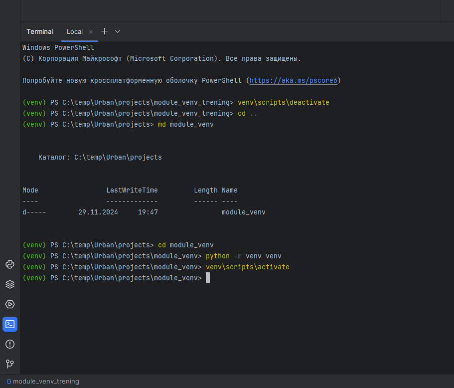
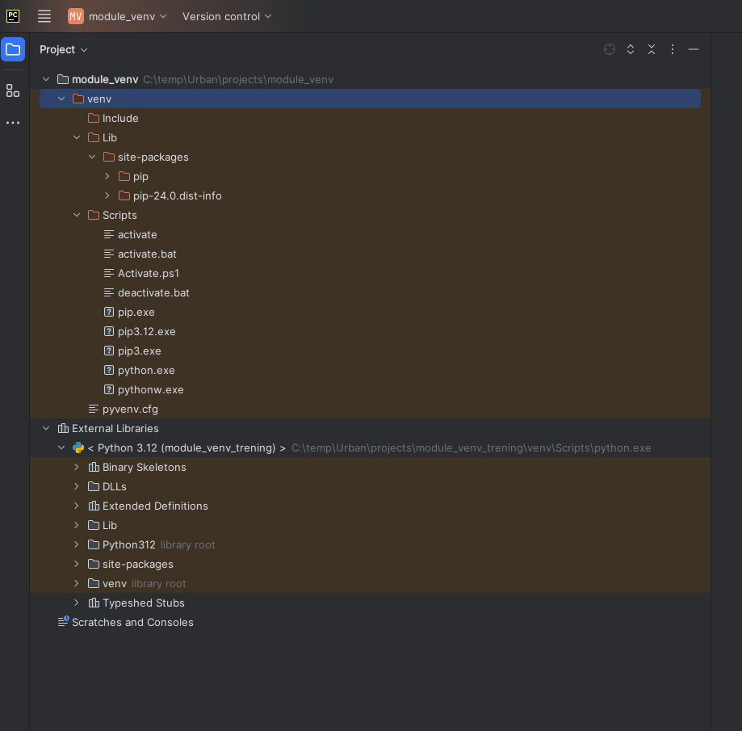
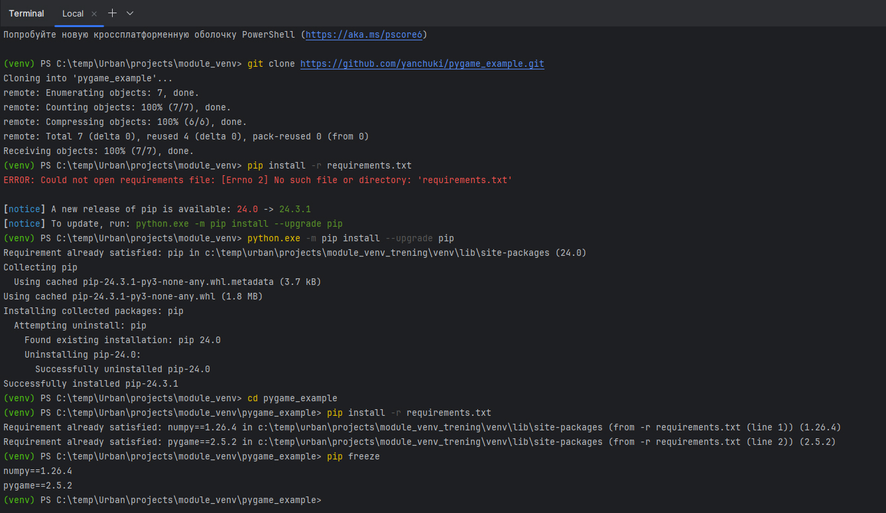
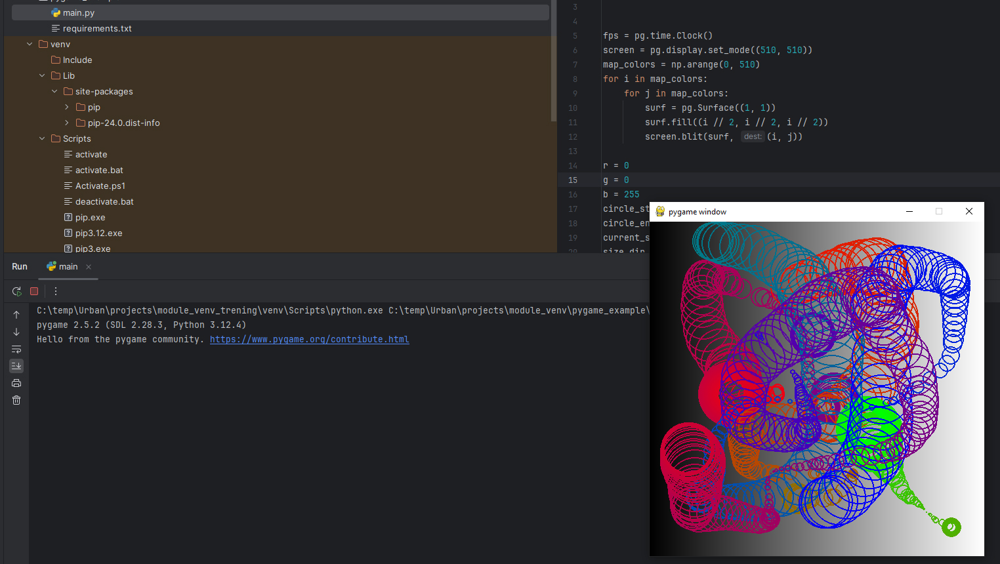

Здесь отражены этапы создания виртуального окружения.
Сначала деактивируем текущее виртуальное пространство,
затем создаем папку для нового проекта.
Далее создаем новое пространство с помощью команды - python -m venv venv
затем активируем данное пространство - venv\scripts\activate

Так выглядит новое виртуальное пространство

Далее клонируем репозиторий - https://github.com/yanchuki/pygame_example.git в текущий проект
и загружаем необходимые пакеты при помощи файла зависимостей - requirements.txt
упс... неверно отразил путь
попутно обновляем pip
вот теперь пакеты установились
проверим наличие установленных пакетов в виртуальном пространстве.

Запускаем програмку из клонированного репозитория и получаем вот такой результат:
